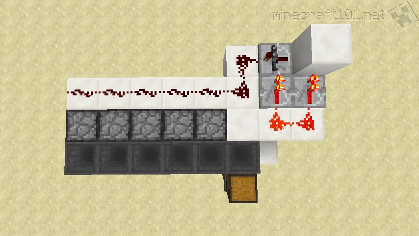

What is Redstone Dust
What can You Use it For?
Within a circuit, Redstone dust acts like a wire. It carries a Redstone signal from a power source to another Redstone item, such as a repeater, a piston or a door.
Using redstone dust
You'll need to place the dust on top of a block, not on the sides or the bottom. Placing several pieces of dust next to each other will create a wire. Simple!
Properties of Redstone dust
Redstone dust is pretty clever. You can run it up and downhill to create a wire without breaking the connection.
Just remember that it can't travel vertically more than one block at a time.
But, clever as it is, the dust still needs to be told what to do. You need to direct it into the item you want to power.
Simply by placing an item (e.g. piston) next to a wire and giving it power won't do the trick. The end of the wire must
be pointed at the item you're trying to power.
When the dust receives a signal from a power source, it can send that signal a maximum distance of 15 blocks before it runs out of
strength. At that point you can place a repeater at the end of the wire to make the signal last for another 15 blocks.